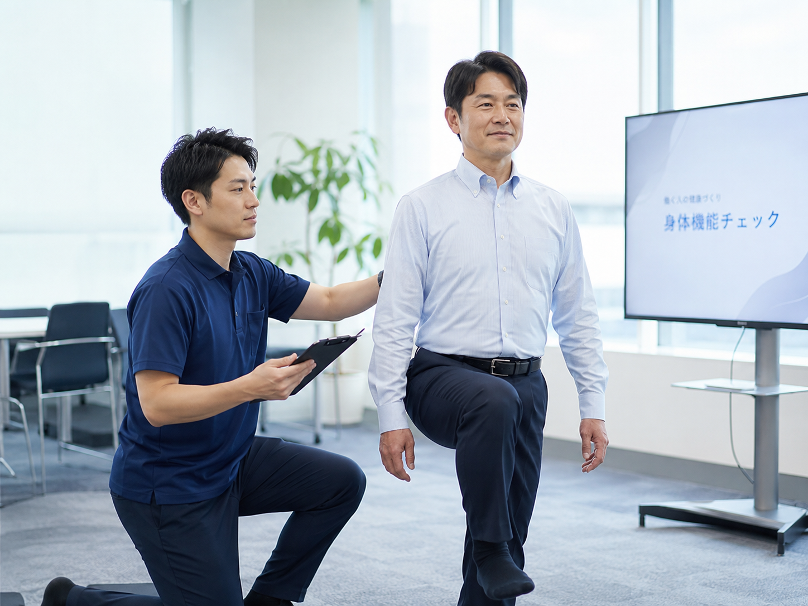
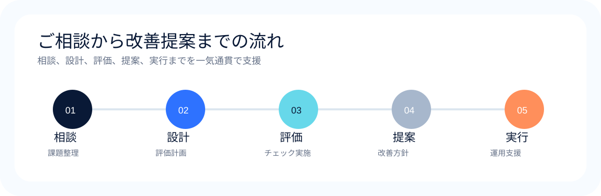

WORKPLACE FRAIL CHECK / ROBOTAS NET
職場を変える。辞めない職場へ。
離職率が低い職場には、安心して働ける理由がある。
人事・総務にとって大切なのは、腰痛そのものだけを見ることではなく、従業員が長く、安全に、安心して働ける状態をどうつくるかです。年齢やフィジカルに不安があっても働き続けられることは、人材定着、離職抑制、採用力の観点でも重要です。ロボタスネットは、身体機能・認知機能・作業負荷の見える化を通じて、その問いに対する打ち手まで支援します。
VISIBLE INSIGHTS
腰痛対策を、離職対策へ。
測定して終わらせず、定着・安全・高齢人材活用につながる改善策へ変えていきます。
ISSUE
腰痛や転倒は、本人だけの問題ではありません。
立ち仕事や重量物作業だけでなく、長時間座位のオフィスワークでも、腰への負担は蓄積します。人事・総務が向き合うべきテーマは、従業員の身体的な不安が、離職・退職、就業継続、採用難にどうつながるかを把握し、職場改善に変えていくことです。
人材定着
高年齢労働者にも、無理なく長く働き続けてもらいたい。
離職抑制
腰痛や作業負荷による離職・退職リスクを減らしたい。
状態把握
誰に、どのような転倒・腰痛リスクがあるのか整理したい。
対策設計
チェック後の活用方法や、具体的な打ち手まで考えたい。
GUIDELINE
指針対応では、体力チェックを“現場で活かすこと”が重要です。
厚生労働省の「高年齢者の労働災害防止のための指針」は、2026年4月1日から適用されています。事業者には、高年齢者の特性に配慮した作業環境改善や作業管理を、事業場の実情に応じて進めることが求められています。
本人の気付きにつなげる
測定結果を本人の理解や予防行動につなげ、無理のない働き方を考えやすくします。
配慮事項の検討に活用する
業務上の配慮事項や配置・作業分担の検討材料として結果を活用します。
合理的な基準で運用する
職務内容に照らし、事業場の実情に応じた現実的な運用を設計します。
環境改善と両立させる
職場環境の改善と本人の体力維持向上を両輪で進め、継続就業につなげます。
WHY NOW
見える化は、安心して働ける職場を設計するための手段です。
ロボタスネットは、身体機能や作業負荷のリスクを把握するだけでなく、その結果を、定着・安全衛生・働きやすさにつながる改善策へ変えることを重視しています。
体力チェックを、職場改善に変える。
見るべきものを整理し、リスク把握で止めず、現場で実行できる対策まで落とし込みます。
まず見るもの
身体機能
筋力、柔軟性、バランス、姿勢、身体の使い方を確認します。
認知機能
注意力、判断力、集中力、反応特性など安全行動に関わる要素を確認します。
作業負荷
中腰、重量物、立位、長時間座位、反復動作など実際の作業負荷を確認します。
見える化する
そこから分かること
誰に負担があるか
本人が気づきにくい身体的な不安やリスクを整理します。
どの作業がリスクか
腰痛・転倒につながりやすい姿勢、動線、工程を整理します。
何から改善すべきか
現場で実行しやすい対策の優先順位を明確にします。
対策に変える
SERVICE
“職場のフレイルチェック”で分かること。
ロボタスネットは、高年齢労働者向け体力チェックを、現場で活かすための「職場のフレイルチェック」として支援しています。理学療法士等の専門家が、現場の実態に合わせて評価を行い、必要な改善策までつなげます。

01
フィジカルチェック
筋力、柔軟性、バランス能力、姿勢、身体の使い方を確認し、転倒や腰痛につながる身体的リスクを見える化します。
- 筋力
- 柔軟性
- バランス
- 体幹機能
02
認知機能チェック
注意力、判断力、集中力、反応特性など、作業中の安全に関わる要素を必要に応じて確認します。
- 注意力
- 判断力
- 集中力
- 反応特性
03
作業遂行能力・作業適合性評価
作業姿勢、動作の流れ、負荷条件を整理し、安全に業務を行える状態かを確認します。
- 作業姿勢
- 作業負荷
- 工程適合
- 現場改善
「その人がその作業を安全に遂行できるか」という視点まで確認し、事業場ごとにカスタマイズできます。
DOWNLOAD / CONTACT
まずは、いまの職場に何が必要か整理しませんか。
高年齢労働者の安全対策、腰痛や転倒リスクの見える化、作業改善の進め方まで、初回相談の段階から整理できます。
DIFFERENCE
一般的な体力チェックとの違いは、その後の対策まで見据えていることです。
身体機能の測定だけでなく、必要に応じて認知機能や作業遂行能力まで確認し、運動指導・作業改善・アシストスーツ活用などの打ち手につなげます。
項目一般的な体力チェックロボタスネット
基本的な体力チェック対応対応
理学療法士による評価サービスにより異なる対応
認知機能チェックサービスにより異なる対応可能
作業遂行能力・作業適合性評価サービスにより異なる対応可能
事業場ごとのカスタマイズサービスにより異なる対応可能
運動指導対応対応
作業改善・アシストスーツ提案サービスにより異なる対応可能
見える化する理由は、チェックのためではありません。
働く人の不安を把握し、雇う側が職場としてできる対策へ落とし込むためです。
自分の状態を知り、無理なく働き続けるきっかけになる。
年齢や体力への不安を一人で抱え込まず、作業上の配慮や身体づくりにつなげられます。
離職・休職につながる要因を、職場改善のテーマとして扱える。
安全衛生、健康経営、人材定着、高齢人材活用の施策として展開しやすくなります。
WORKLOAD
腰への負担は、現場作業だけの問題ではありません。
重量物を扱う作業や中腰姿勢に加えて、長時間立ち続ける仕事、反復動作が多い仕事、介助や運搬を伴う仕事、そして長時間座って働くオフィスワークでも、姿勢や環境によって腰への負担は生じます。
立ち仕事中腰作業重量物運搬介助作業長時間座位同一姿勢反復動作床面・階段作業量変動
ACTION
運動指導だけでなく、すぐにできる対策もご提案します。
評価結果に基づき、身体機能の維持向上を目的とした運動指導にも対応しています。一方で、現場の負荷が高い場合には、運動だけに頼らず、並行して対策を講じることが重要です。
- 作業姿勢や動線の見直し
- 作業方法の改善
- アシストスーツ等の活用提案
- 現場で実行しやすい優先順位づけ
運動による改善と、現場負荷を下げる対策の両輪で進めることが、高年齢労働者の安全対策では重要です。
STRENGTH
ロボタスネットが選ばれる理由
測定の実施だけでなく、結果の解釈、現場との接続、対策の優先順位づけまで支援できることが強みです。
理学療法士が評価から提案まで対応
身体機能の測定だけでなく、結果の解釈、作業への影響、改善策の優先順位まで整理します。
認知機能・作業遂行能力まで評価可能
注意・判断・反応の特性、実際の作業に必要な能力との適合まで確認できます。
事業場の実情に合わせてカスタマイズ可能
職務内容や工程、負荷条件に応じて、評価項目や見方を調整できます。
運動指導に加え、すぐにできる対策も提案
作業改善やアシストスーツ等の補完策も含め、現場で実行しやすい形で支援します。
FOR WHO
このような企業様におすすめです
人事・総務、現場責任者、安全衛生担当が同じ方向を向いて取り組みやすい設計を想定しています。
VALUE
働く人と雇う人、双方にとって意味のある見える化へ。
働く人にとって
自分の身体の状態を知り、無理のない働き方や作業上の配慮につなげるきっかけになります。
雇う人にとって
従業員の身体的リスクを把握し、安全衛生・人材定着・健康経営の施策として展開できます。
現場にとって
作業姿勢、動線、工程、補助具活用など、実行しやすい対策の優先順位を整理できます。
FLOW
ご相談から評価・改善提案までの流れ
相談、設計、評価、提案、実行までを一気通貫で支援します。まずは現場の状況や課題感をお聞かせください。

- 01
お問い合わせ
現場の状況、対象人数、業種、課題感などをお聞かせください。
- 02
ヒアリング
転倒・腰痛リスク、作業内容、職場環境、指針対応の状況を整理します。
- 03
評価内容の設計
体力チェックに加え、認知機能や作業遂行能力評価の必要性を検討します。
- 04
チェック・評価の実施
理学療法士等の専門家が、現場の状況に合わせて評価を行います。
- 05
結果整理・改善提案
運動指導、作業改善、環境改善、アシストスーツ活用などを提案します。
FAQ
よくある質問
何から相談すればよいですか？
「指針対応として何から始めればよいか知りたい」という段階でも問題ありません。現場の状況を伺いながら、必要な評価内容を一緒に整理します。
人事・総務が導入を検討する意味は何ですか？
従業員が長く安全に働ける状態をつくることは、人材定着、離職抑制、高齢人材活用の観点でも重要です。腰痛対策は、そのための重要な切り口の一つです。
一般的な体力チェックとの違いは何ですか？
身体機能の把握だけでなく、認知機能や作業遂行能力、作業負荷まで含めて確認し、現場改善につなげる点が特長です。
オフィスワークでも相談できますか？
はい。長時間座位や同一姿勢が続く業務でも腰への負担は生じるため、作業内容や姿勢を踏まえてご相談いただけます。
アシストスーツの提案も可能ですか？
はい。評価結果を踏まえ、必要に応じて作業改善やアシストスーツ等の活用をご提案します。
CONTACT
高年齢労働者の体力チェックと、その後の対策までご相談ください。
「何から始めればよいか分からない」という段階でも問題ありません。自社の現場に必要な評価内容や、実行しやすい対策を一緒に整理します。